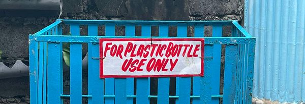
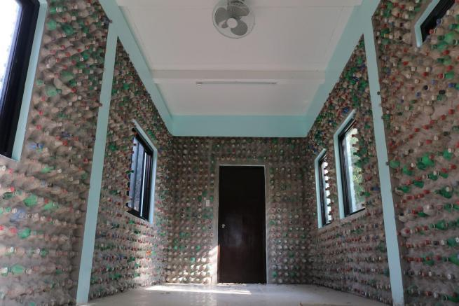
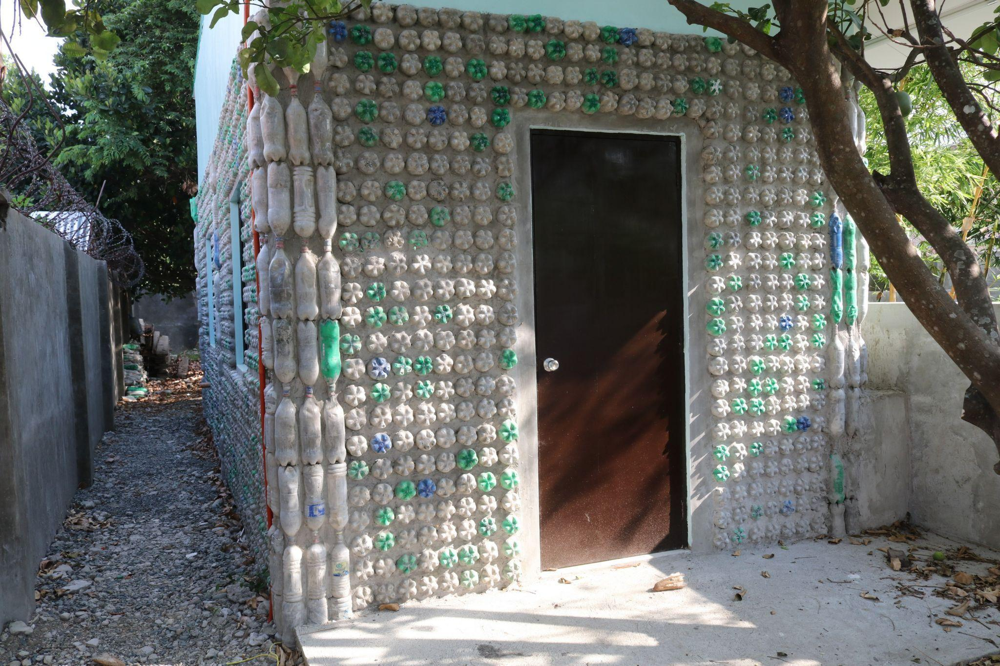
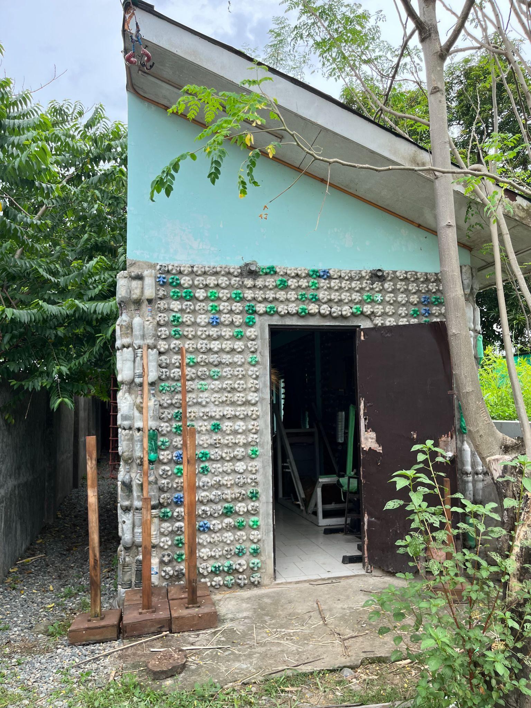
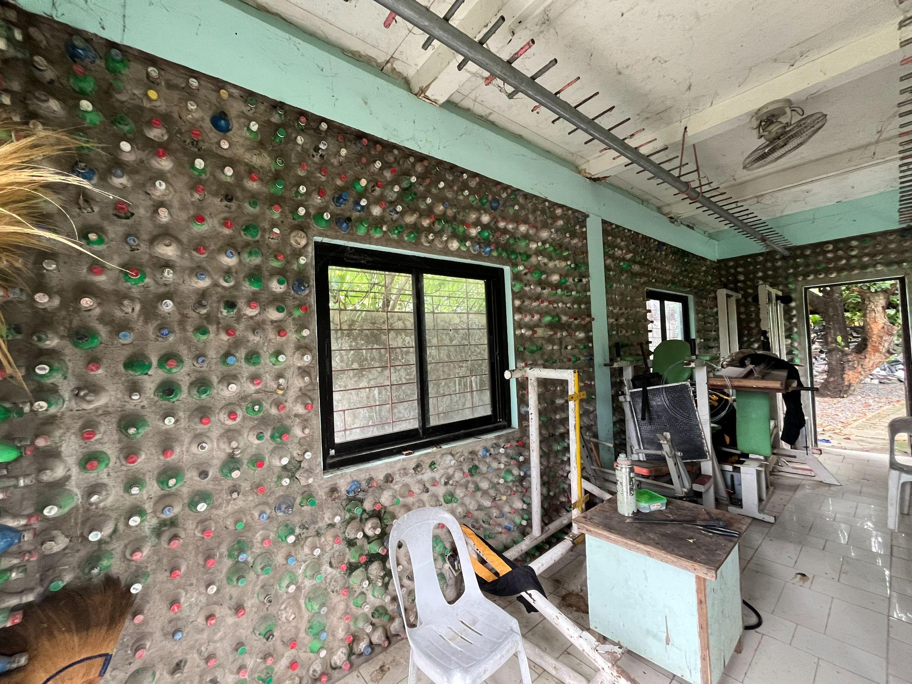

| Campus Plastic Segregation & Upcycling Structures | |
|---|---|
| Collection Bins | The Bottle House |
|
 Trash bins for Plastic Bottles
|
|
|
 Bottle House - Exterior structure
|
 Bottle House - Wall panels close-up
|
| The Bottle House structures built from recycled plastic bottles | |
Across Urdaneta City University (UCU), strategically placed plastic collection bins form an essential component of the University’s integrated waste management system, in alignment with the UI GreenMetric World University Rankings, particularly under the Waste (WS) and Setting & Infrastructure (SI) indicators. These color-coded and visually engaging bins are installed in high-traffic areas, academic buildings, and open spaces to promote accessibility, proper waste segregation, and active participation in recycling initiatives.
The placement and design of these collection bins are intended not only for convenience but also to serve as constant visual reminders of the importance of responsible waste disposal. By making recycling easy and visible, UCU encourages consistent behavioral change among students, faculty, staff, and visitors. Each plastic bottle deposited into these bins contributes to reducing landfill waste, conserving resources, and supporting material recovery processes.
Beyond their functional role, the collection bins play a significant part in strengthening environmental awareness and fostering a culture of sustainability across campus. They are integrated into awareness campaigns and sustainability programs, reinforcing the principles of waste segregation, reduction, and recycling—key components of GreenMetric’s waste management indicators. This initiative supports measurable outcomes such as improved waste diversion rates and enhanced recycling participation.
The Bottle House at UCU stands as a landmark initiative that embodies innovation, creativity, and environmental responsibility. As part of the University’s sustainability framework aligned with the UI GreenMetric World University Rankings, this structure contributes to the Setting & Infrastructure (SI) and Waste (WS) indicators by showcasing the practical reuse of plastic waste into functional and aesthetic infrastructure.
Constructed entirely from recycled 1.5-liter and 2-liter plastic bottles, the Bottle House demonstrates how post-consumer plastic waste can be transformed into a durable and visually striking structure. The bottles are carefully arranged to form walls that allow natural light to pass through, creating a vibrant and dynamic architectural feature. This innovative use of materials highlights the principles of upcycling, where waste is converted into higher-value applications.
More than a physical structure, the Bottle House serves as a living symbol of sustainability and environmental advocacy. It reflects UCU’s commitment to reducing plastic waste while promoting awareness of sustainable building practices and circular resource use. The structure also functions as an educational and experiential learning space, allowing students and visitors to engage with sustainability concepts in a tangible way.
Additional evidence link (i.e., for videos, more images, or other files that are not included in this file):
| Additional Inorganic Waste Treatment Evidence | |
|---|---|
| Collection & Processing | Environmental Structures |
|
 Inorganic waste segregation and materials collection
|
 Complete view of the completed Bottle House structure
|